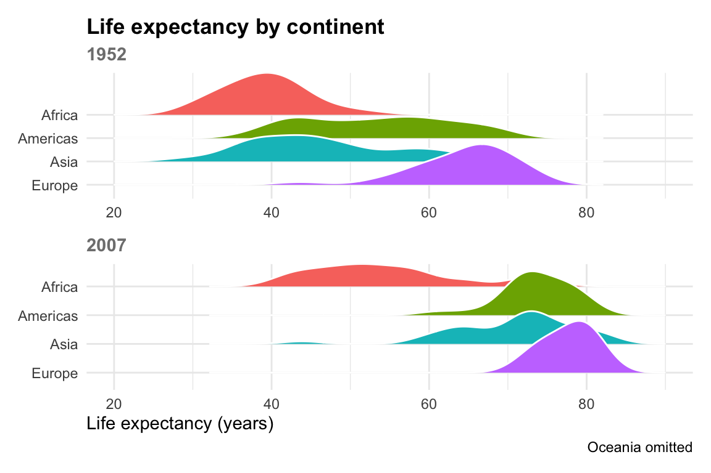
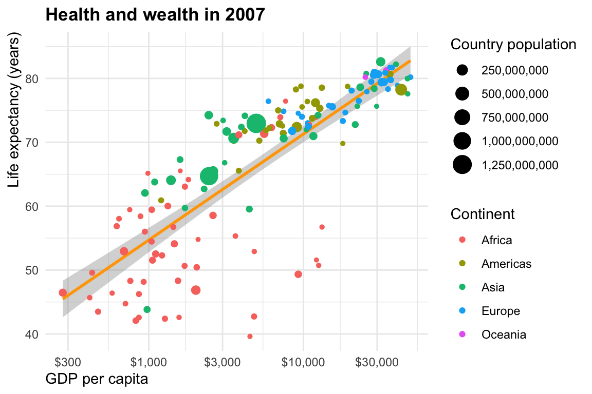

Health and Wealth Around the World
Gapminder data, 1952–2007
Introduction
This analysis shows trends in life expectancy and GDP per capita for 142 countries from 1952 to 2007. The data was originally collected by Hans Rosling and the Gapminder foundation (Rosling et al. 2018).
ImportantKey findings
Health and wealth are correlated!
Continent-level trends
According to Figure 1, average life expectancy increased substantially between 1952 to 2007. Asia saw the biggest average increase (see Table 1).
| Averages | |||
|---|---|---|---|
| Continent | 1952 | 2007 | Change |
| Asia | 46.3 | 70.7 | 24.4 |
| Americas | 53.3 | 73.6 | 20.3 |
| Africa | 39.1 | 54.8 | 15.7 |
| Europe | 64.4 | 77.6 | 13.2 |
| Oceania | 69.3 | 80.7 | 11.5 |
Country-level trends
Figure 2 recreates a part of Hans Rosling’s famous “200 countries, 200 years, 4 minutes” video and shows the relationship betweeen GDP per capita and life expectancy.

References
Rosling, Hans, Ola Rosling, and Anna Rosling Rönnlund. 2018. Factfulness: Ten Reasons We’re Wrong about the World—and Why Things Are Better Than You Think. Flatiron Books.